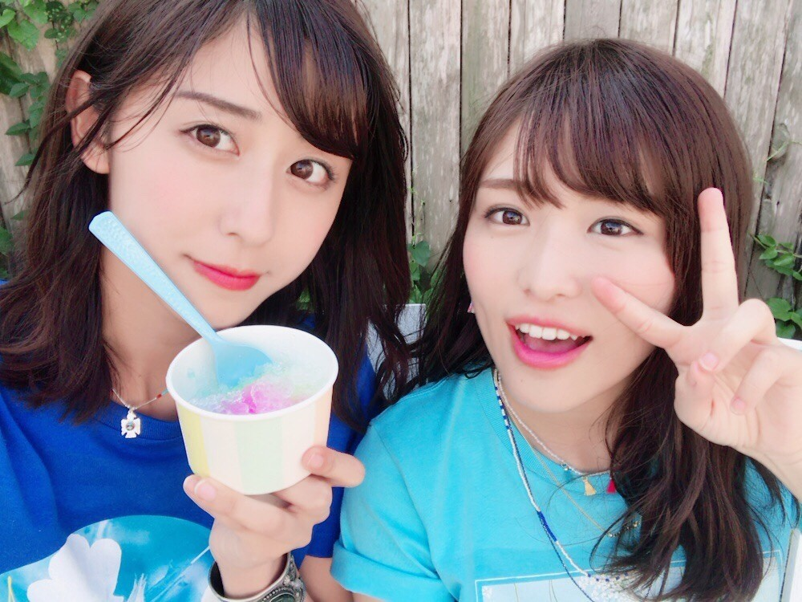
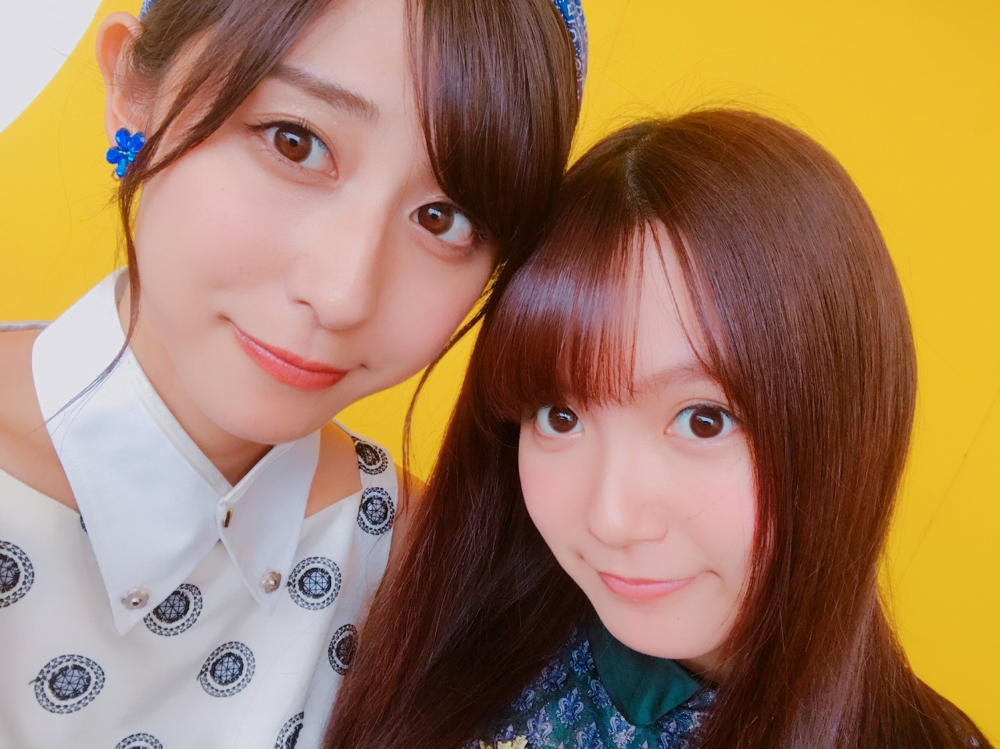
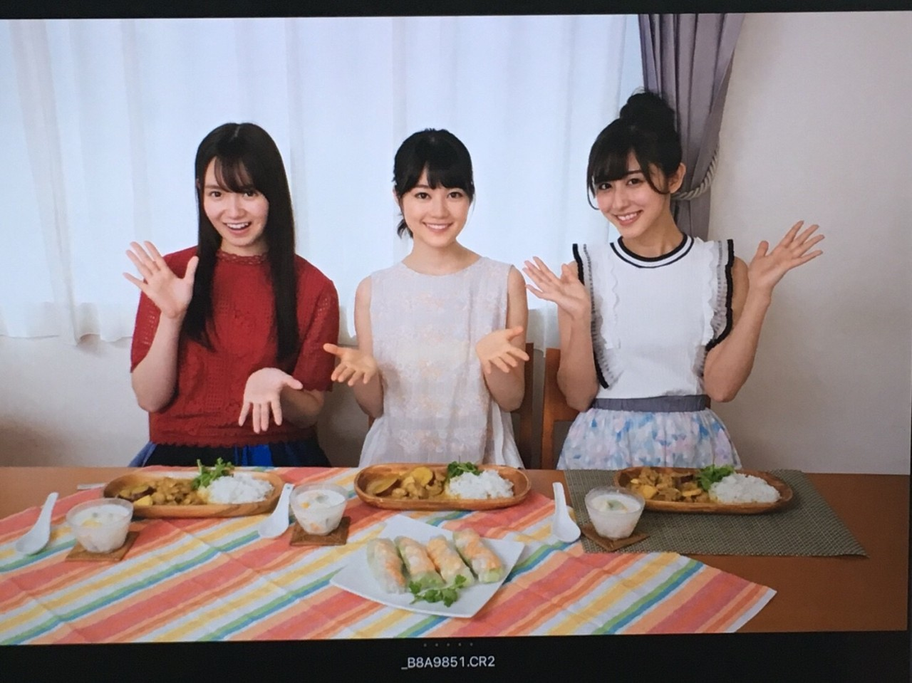

| 2017/08 08 Tue | 斎藤ちはる 発売日。 |
ちはるーむへようこそ
明日8/9は「逃げ水」発売日となります！
ジャケット写真、とっても楽しかったんです〜
夏らしいTシャツ、実は
「努力」「感謝」「笑顔」の花言葉の
お花がプリントされているの！
私のは...何だか忘れちゃったけど...笑
美彩と同じTシャツだったのは覚えてる！！
青が夏らしくていいね〜♡
type Dの裏面にパイナップルを頭に乗せて
載っているのですが、
実は他の候補もあったの！

色とりどりのかき氷とか
スイカとか◎
個人ショットは通常版に入ってます！
実はこのジャケ写の
カメラマンの今城純さんは
私がずっとお会いしたいと思っていた方。
ななみんの写真集や
他にも色んな著名人の方の写真を撮っていたり
風景の写真もとっても綺麗で
ずっと憧れていたのです。
今回御一緒できてとても嬉しかった☺︎
また(今度は一人仕事で...)お会いできますように！！

めーちゃんの卒業発表。
らじらー！もずっと聞いていました
めーちゃんの決めたことだから
心から応援したいし、背中を押したい。
卒業することを教えてくれた時の
めーちゃんの表情がとってもスッキリしていたしカッコよかったから。
もう私自身めーちゃんの卒業を受け入れて
笑顔で送り出せる気持ちの準備は出来ていたつもりだったんだけど
ふとしたときに歌声を聞いたり
踊っている動画を見たり
写真を見返したりすると
急に寂しくなってきてしまう。
やっぱり卒業してほしくないな〜
っていうワガママが出てきてしまう。
でも今は、めーちゃんと一緒に活動できる
この一瞬一瞬を大切にしていきたいな、
と素直に思います。
アンダーライブ九州シリーズ
一緒に頑張ろうね！
そしてこれからもよろしくね。

卒業しても、変わらないよ\( ˆ ˆ )/
斎藤ちはる